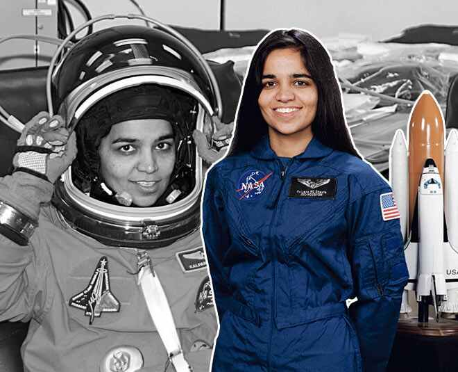

A Beacon of Courage and Perseverance
"The path from dreams to success does exist. May you have the vision to find it, the courage to get on to it, and the perseverance to follow it."
Kalpana Chawla, a name synonymous with courage, perseverance, and the pursuit of dreams, left an indelible mark on the world through her remarkable journey as an astronaut. Born in Karnal, India, on March 17, 1962, Kalpana's fascination with the stars began at a young age. Despite facing numerous challenges, she never wavered in her determination to reach for the skies. After obtaining her bachelor's degree in aeronautical engineering from Punjab Engineering College in India, Kalpana moved to the United States to pursue her passion for aerospace engineering. She earned her Master of Science degree in aerospace engineering from the University of Texas at Arlington and later completed her Ph.D. in aerospace engineering from the University of Colorado Boulder. Kalpana's journey to space began when she was selected as an astronaut candidate by NASA in 1994. Her selection was a testament to her exceptional skills, intelligence, and dedication. In 1997, she made history as the first woman of Indian origin to fly in space when she boarded the Space Shuttle Columbia on mission STS-87. Her journey into space was a momentous occasion not only for India but for the entire world, inspiring millions with her courage and determination. Throughout her career, Kalpana's passion for space exploration remained unwavering. She embarked on her second spaceflight aboard the ill-fated Space Shuttle Columbia in 2003. Tragically, the mission ended in disaster when the shuttle disintegrated upon re-entry into the Earth's atmosphere. Kalpana, along with her six fellow crew members, lost her life in the accident. Despite the tragic end to her life, Kalpana Chawla's legacy continues to inspire countless individuals around the globe. Her unwavering determination, courage, and passion for exploration serve as a beacon of hope for aspiring astronauts and dreamers everywhere. Kalpana's journey reminds us that no dream is too big to pursue and that with dedication and perseverance, anything is possible. In honor of her extraordinary contributions to space exploration and her enduring legacy, Kalpana Chawla will forever be remembered as a trailblazer who dared to reach for the stars and inspired generations to come.